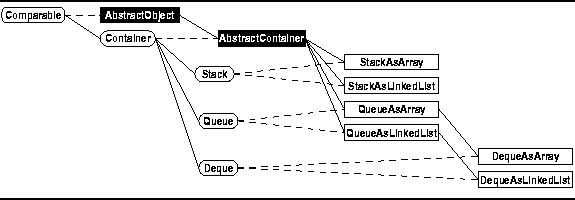

Data Structures and Algorithms
with Object-Oriented Design Patterns in Java
Data Structures and Algorithms
with Object-Oriented Design Patterns in JavaIn this chapter we consider several related abstract data types--stacks, queues, and deques. Each of these can be viewed as a pile of items. What distinguishes each of them is the way in which items are added to or removed from the pile.
In the case of a stack, items are added to and removed from the top of the pile. Consider the pile of papers on your desk. Suppose you add papers only to the top of the pile or remove them only from the top of the pile. At any point in time, the only paper that is visible is the one on top. What you have is a stack.
Now suppose your boss comes along and asks you to complete a form immediately. You stop doing whatever it is you are doing, and place the form on top of your pile of papers. When you have filled-out the form, you remove it from the top of the stack and return to the task you were working on before your boss interrupted you. This example illustrates that a stack can be used to keep track of partially completed tasks.
A queue is a pile in which items are added an one end and removed from the other. In this respect, a queue is like the line of customers waiting to be served by a bank teller. As customers arrive, they join the end of the queue while the teller serves the customer at the head of the queue. As a result, a queue is used when a sequence of activities must be done on a first-come, first-served basis.
Finally, a deque extends the notion of a queue. In a deque, items can be added to or removed from either end of the queue. In a sense, a deque is the more general abstraction of which the stack and the queue are just special cases.
As shown in Figure  ,
we view stacks, queues, and deques as containers.
This chapter presents a number of different implementation alternatives
for stacks, queues, and deques.
All of the concrete classes presented are extensions
of the AbstractContainer class defined in Chapter .
,
we view stacks, queues, and deques as containers.
This chapter presents a number of different implementation alternatives
for stacks, queues, and deques.
All of the concrete classes presented are extensions
of the AbstractContainer class defined in Chapter .

Figure: Object class hierarchy.
 Copyright © 1998 by Bruno R. Preiss, P.Eng. All rights reserved.
Copyright © 1998 by Bruno R. Preiss, P.Eng. All rights reserved.